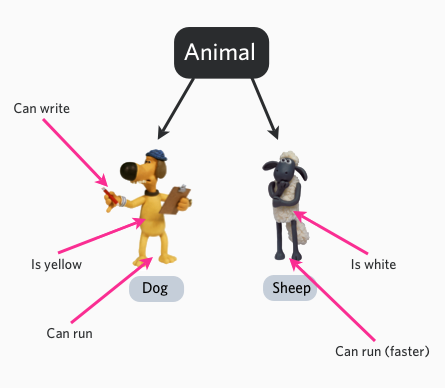
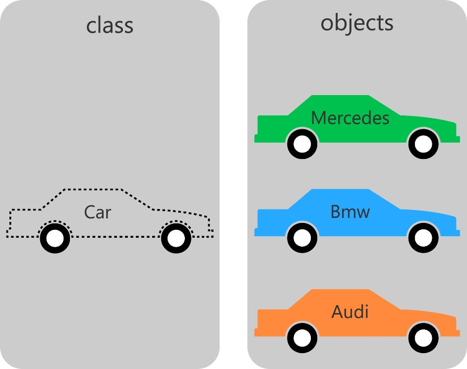

PHP Object-Oriented
Object-Oriented (OO for short) is a programming idea and methodology that encapsulates the data in a program together with the methods that operate on the data, forming "objects", and completes the program's functions through interaction and message passing between objects. Object-oriented programming emphasizes features such as encapsulation, inheritance, polymorphism, and dynamic binding, making the program more extensible, maintainable, and reusable.
In object-oriented programming (English: Object-oriented programming, abbreviated as OOP), an object is a whole composed of information and the description of processing that information, and it is an abstraction of the real world.
In the real world, everything we face is an object, such as computers, televisions, bicycles, and so on.
The three main characteristics of an object:
- Object behavior: the operations an object can perform. For example, turning on a light or turning off a light are behaviors.
- Object form: how the object responds to different behaviors, such as color, size, and appearance.
- Object representation: the representation of an object is equivalent to an ID card, specifically distinguishing the differences among objects with the same behavior and state.
For example, Animal is an abstract class. We can specify it as a dog and a sheep. The dog and sheep are concrete objects. They have color attributes and behavior states such as barking and running.

Three main characteristics of object-oriented programming:
Encapsulation: refers to encapsulating an object's properties and methods together, so that the outside cannot directly access or modify the object's internal state. By using access control modifiers (public, private, protected) to restrict access to properties and methods, encapsulation is achieved.
Inheritance: refers to the ability to create a new class that inherits the properties and methods of a parent class, and can add its own properties and methods. Through inheritance, you can avoid writing similar code repeatedly and achieve code reuse.
Polymorphism: refers to the ability to use a variable of a parent class type to reference objects of different subclass types, thereby achieving unified operations on different objects. Polymorphism makes code more flexible, with better extensibility and maintainability. In PHP, polymorphism can be achieved by implementing interfaces and using abstract classes.
Object-Oriented Content
类− Defines the abstract characteristics of a thing. The definition of a class includes the form of the data and the operations on the data.
Object− Is an instance of a class.
Member Variables− Variables defined inside a class. The value of the variable is not visible externally, but it can be accessed through member functions. After the class is instantiated as an object, the variable becomes a property of the object.
Member Functions− Defined inside the class, they can be used to access the object's data.
Inheritance− Inheritance is a mechanism by which a subclass automatically shares the data structures and methods of the parent class; it is a relationship between classes. When defining and implementing a class, you can do so on the basis of an existing class, taking the content defined by the existing class as your own, and adding some new content.
Parent Class− If a class is inherited by other classes, that class can be called a parent class, base class, or superclass.
Child Class− A class that inherits from another class is called a child class, also known as a derived class.
Polymorphism− Polymorphism means that the same function or method can act on multiple types of objects and obtain different results. Different objects receiving the same message can produce different results; this phenomenon is called polymorphism.
Overloading− Simply put, it is the situation where functions or methods have the same name but different parameter lists. Such functions or methods with the same name but different parameters are called overloaded functions or methods.
Abstraction− Abstraction refers to abstracting objects with consistent data structures (attributes) and behaviors (operations) into classes. A class is such an abstraction; it reflects important properties related to the application while ignoring other irrelevant content. Any classification of classes is subjective, but it must be related to the specific application.
Encapsulation− Encapsulation refers to binding the attributes and behaviors of an object existing in the real world together and placing them within a logical unit.
Constructor− Mainly used to initialize an object when creating it, that is, to assign initial values to the object's member variables. It is always used together with the new operator in statements that create objects.
Destructor− The destructor is the opposite of the constructor. When an object ends its life cycle (for example, when the function containing the object has finished executing), the system automatically executes the destructor. The destructor is often used to do "cleanup" work (for example, if a memory space was allocated with new when creating the object, it should be released with delete in the destructor before exiting).
In the figure below, we created three objects using the Car class: Mercedes, Bmw, and Audi.
$mercedes = new Car (); $bmw = new Car (); $audi = new Car ();

PHP Class Definition
The usual syntax for defining a class in PHP is as follows:
<?php
class phpClass {
var $var1;
var $var2 = "constant string";
function myfunc ($arg1, $arg2) {
[..]
}
[..]
}
?>
The analysis is as follows:
Classes are defined usingclassthe class keyword followed by the class name.
Variables and methods can be defined within the pair of curly braces ({}) after the class name.
Class variables are declared usingvarand variables can also be initialized with values.
Function definitions are similar to PHP function definitions, but functions can only be accessed through the class and its instantiated objects.
Example
<?php
class Site {
/* 成员变量 */
var $url;
var $title;
/* 成员函数 */
function setUrl($par){
$this->url = $par;
}
function getUrl(){
echo $this->url . PHP_EOL;
}
function setTitle($par){
$this->title = $par;
}
function getTitle(){
echo $this->title . PHP_EOL;
}
}
?>
Variable$this$this represents the object itself.
PHP_EOLis the newline character.
Creating Objects in PHP
After a class is created, we can usenewthe operator to instantiate an object of the class:
$runoob = new Site; $taobao = new Site; $google = new Site;
In the above code, we created three objects. Each of the three objects is independent. Next, let's see how to access member methods and member variables.
Calling Member Methods
After instantiating an object, we can use the object to call member methods. The object's member methods can only operate on the object's member variables:
// 调用成员函数，设置标题和URL $runoob->setTitle( "菜鸟教程" ); $taobao->setTitle( "淘宝" ); $google->setTitle( "Google 搜索" ); $runoob->setUrl( 'www.runoob.com' ); $taobao->setUrl( 'www.taobao.com' ); $google->setUrl( 'www.google.com' ); // 调用成员函数，获取标题和URL $runoob->getTitle(); $taobao->getTitle(); $google->getTitle(); $runoob->getUrl(); $taobao->getUrl(); $google->getUrl();
The full code is as follows:
Example
class Site {
/* Member variables */
var $url;
var $title;
/* Member functions */
function setUrl($par){
$this->url = $par;
}
function getUrl(){
echo $this->url . PHP_EOL;
}
function setTitle($par){
$this->title = $par;
}
function getTitle(){
echo $this->title . PHP_EOL;
}
}
$runoob = new Site;
$taobao = new Site;
$google = new Site;
// Call member functions to set the title and URL
$runoob->setTitle( Runoob);
$taobao->setTitle( Taobao);
$google->setTitle( Google Search);
$runoob->setUrl( 'www.runoob.com' );
$taobao->setUrl( 'www.taobao.com' );
$google->setUrl( 'www.google.com' );
// Call member functions to get the title and URL
$runoob->getTitle();
$taobao->getTitle();
$google->getTitle();
$runoob->getUrl();
$taobao->getUrl();
$google->getUrl();
?>
Run Example »
Executing the above code produces the following output:
菜鸟教程 淘宝 Google 搜索 www.runoob.com www.taobao.com www.google.com
PHP Constructor
A constructor is a special method. It is mainly used to initialize an object when creating it, that is, to assign initial values to the object's member variables. In the statement that creates the object, together withnewthe operator.
PHP 5 allows developers to define a method in a class as the constructor. The syntax is as follows:
void __construct ([ mixed $args [, $... ]] )
In the example above, we can initialize the $url and $title variables through the constructor:
function __construct( $par1, $par2 ) {
$this->url = $par1;
$this->title = $par2;
}
Now we no longer need to call the setTitle and setUrl methods:
Example
$taobao = new Site('www.taobao.com', 'Taobao');
$google = new Site('www.google.com', 'Google Search');
// Call member functions to get the title and URL
$runoob->getTitle();
$taobao->getTitle();
$google->getTitle();
$runoob->getUrl();
$taobao->getUrl();
$google->getUrl();
Run Example »
Destructor
The destructor is the opposite of the constructor. When an object ends its life cycle (for example, when the function in which the object is located has finished executing), the system automatically executes the destructor.
PHP 5 introduced the concept of a destructor, similar to other object-oriented languages. Its syntax is as follows:
void __destruct ( void )
Example
<?php
class MyDestructableClass {
function __construct() {
print "构造函数\n";
$this->name = "MyDestructableClass";
}
function __destruct() {
print "销毁 " . $this->name . "\n";
}
}
$obj = new MyDestructableClass();
?>
Executing the above code produces the following output:
构造函数 销毁 MyDestructableClass
Inheritance
PHP uses the keywordextendsto inherit a class. PHP does not support multiple inheritance, the format is as follows:
class Child extends Parent {
// 代码部分
}
Example
In the example, the Child_Site class inherits the Site class and extends its functionality:
<?php
// 子类扩展站点类别
class Child_Site extends Site {
var $category;
function setCate($par){
$this->category = $par;
}
function getCate(){
echo $this->category . PHP_EOL;
}
}
Method Overriding
If the methods inherited from the parent class cannot meet the needs of the child class, they can be rewritten. This process is called method overriding (override).
In the example, the getUrl and getTitle methods are overridden:
function getUrl() {
echo $this->url . PHP_EOL;
return $this->url;
}
function getTitle(){
echo $this->title . PHP_EOL;
return $this->title;
}
Access Control
PHP implements access control for properties or methods by adding the keywords public, protected, or private before them.
- public:Public class members can be accessed from anywhere.
- protected:Protected class members can be accessed by the class itself, as well as its child classes and parent class.
- private:Private class members can only be accessed by the class in which they are defined.
Access Control of Properties
Class properties must be defined as one of public, protected, or private. If defined with var, they are treated as public.
<?php
/**
* Define MyClass
*/
class MyClass
{
public $public = 'Public';
protected $protected = 'Protected';
private $private = 'Private';
function printHello()
{
echo $this->public;
echo $this->protected;
echo $this->private;
}
}
$obj = new MyClass();
echo $obj->public; // 这行能被正常执行
echo $obj->protected; // 这行会产生一个致命错误
echo $obj->private; // 这行也会产生一个致命错误
$obj->printHello(); // 输出 Public、Protected 和 Private
/**
* Define MyClass2
*/
class MyClass2 extends MyClass
{
// 可以对 public 和 protected 进行重定义，但 private 而不能
protected $protected = 'Protected2';
function printHello()
{
echo $this->public;
echo $this->protected;
echo $this->private;
}
}
$obj2 = new MyClass2();
echo $obj2->public; // 这行能被正常执行
echo $obj2->private; // 未定义 private
echo $obj2->protected; // 这行会产生一个致命错误
$obj2->printHello(); // 输出 Public、Protected2 和 Undefined
?>
Access Control of Methods
Methods in a class can be defined as public, private, or protected. If none of these keywords are set, the method defaults to public.
<?php
/**
* Define MyClass
*/
class MyClass
{
// 声明一个公有的构造函数
public function __construct() { }
// 声明一个公有的方法
public function MyPublic() { }
// 声明一个受保护的方法
protected function MyProtected() { }
// 声明一个私有的方法
private function MyPrivate() { }
// 此方法为公有
function Foo()
{
$this->MyPublic();
$this->MyProtected();
$this->MyPrivate();
}
}
$myclass = new MyClass;
$myclass->MyPublic(); // 这行能被正常执行
$myclass->MyProtected(); // 这行会产生一个致命错误
$myclass->MyPrivate(); // 这行会产生一个致命错误
$myclass->Foo(); // 公有，受保护，私有都可以执行
/**
* Define MyClass2
*/
class MyClass2 extends MyClass
{
// 此方法为公有
function Foo2()
{
$this->MyPublic();
$this->MyProtected();
$this->MyPrivate(); // 这行会产生一个致命错误
}
}
$myclass2 = new MyClass2;
$myclass2->MyPublic(); // 这行能被正常执行
$myclass2->Foo2(); // 公有的和受保护的都可执行，但私有的不行
class Bar
{
public function test() {
$this->testPrivate();
$this->testPublic();
}
public function testPublic() {
echo "Bar::testPublic\n";
}
private function testPrivate() {
echo "Bar::testPrivate\n";
}
}
class Foo extends Bar
{
public function testPublic() {
echo "Foo::testPublic\n";
}
private function testPrivate() {
echo "Foo::testPrivate\n";
}
}
$myFoo = new foo();
$myFoo->test(); // Bar::testPrivate
// Foo::testPublic
?>
Interfaces
Using interfaces, you can specify which methods a class must implement, without defining the specific contents of these methods.
An interface is defined using theinterfacekeyword, just like defining a standard class, but all methods defined in it are empty.
All methods defined in an interface must be public; this is a characteristic of interfaces.
To implement an interface, use theimplementsoperator. The class must implement all methods defined in the interface, otherwise a fatal error will be reported. A class can implement multiple interfaces, separating the names of the multiple interfaces with commas.
<?php
// 声明一个'iTemplate'接口
interface iTemplate
{
public function setVariable($name, $var);
public function getHtml($template);
}
// 实现接口
class Template implements iTemplate
{
private $vars = array();
public function setVariable($name, $var)
{
$this->vars[$name] = $var;
}
public function getHtml($template)
{
foreach($this->vars as $name => $value) {
$template = str_replace('{' . $name . '}', $value, $template);
}
return $template;
}
}
Constants
You can define values that remain constant in a class as constants. When defining and using constants, the $ symbol is not needed.
The value of a constant must be a fixed value; it cannot be a variable, a class property, the result of a mathematical operation, or a function call.
As of PHP 5.3.0, a variable can be used to dynamically call a class. However, the value of this variable cannot be a keyword (such as self, parent, or static).
Example
<?php
class MyClass
{
const constant = '常量值';
function showConstant() {
echo self::constant . PHP_EOL;
}
}
echo MyClass::constant . PHP_EOL;
$classname = "MyClass";
echo $classname::constant . PHP_EOL; // 自 5.3.0 起
$class = new MyClass();
$class->showConstant();
echo $class::constant . PHP_EOL; // 自 PHP 5.3.0 起
?>
Abstract Classes
Any class that has at least one method declared abstract must itself be declared abstract.
A class defined as abstract cannot be instantiated.
Methods defined as abstract only declare their calling method (parameters) and cannot define their specific functional implementation.
When inheriting an abstract class, the child class must define all abstract methods in the parent class. In addition, the access control of these methods must be the same as (or more permissive than) that in the parent class. For example, if an abstract method is declared protected, then the method implemented in the child class should be declared protected or public, and cannot be defined as private.
<?php
abstract class AbstractClass
{
// 强制要求子类定义这些方法
abstract protected function getValue();
abstract protected function prefixValue($prefix);
// 普通方法（非抽象方法）
public function printOut() {
print $this->getValue() . PHP_EOL;
}
}
class ConcreteClass1 extends AbstractClass
{
protected function getValue() {
return "ConcreteClass1";
}
public function prefixValue($prefix) {
return "{$prefix}ConcreteClass1";
}
}
class ConcreteClass2 extends AbstractClass
{
public function getValue() {
return "ConcreteClass2";
}
public function prefixValue($prefix) {
return "{$prefix}ConcreteClass2";
}
}
$class1 = new ConcreteClass1;
$class1->printOut();
echo $class1->prefixValue('FOO_') . PHP_EOL;
$class2 = new ConcreteClass2;
$class2->printOut();
echo $class2->prefixValue('FOO_') . PHP_EOL;
?>
Executing the above code produces the following output:
ConcreteClass1 FOO_ConcreteClass1 ConcreteClass2 FOO_ConcreteClass2
In addition, child class methods can contain optional parameters that do not exist in the parent class's abstract methods.
For example, if a child class defines an optional parameter that is not present in the declaration of the parent class's abstract method, it can still run normally.
<?php
abstract class AbstractClass
{
// 我们的抽象方法仅需要定义需要的参数
abstract protected function prefixName($name);
}
class ConcreteClass extends AbstractClass
{
// 我们的子类可以定义父类签名中不存在的可选参数
public function prefixName($name, $separator = ".") {
if ($name == "Pacman") {
$prefix = "Mr";
} elseif ($name == "Pacwoman") {
$prefix = "Mrs";
} else {
$prefix = "";
}
return "{$prefix}{$separator} {$name}";
}
}
$class = new ConcreteClass;
echo $class->prefixName("Pacman"), "\n";
echo $class->prefixName("Pacwoman"), "\n";
?>
Output result:
Mr. Pacman Mrs. Pacwoman
Static Keyword
Declaring a class property or method as static allows direct access without instantiating the class.
Static properties cannot be accessed through an instantiated object of a class (but static methods can).
Since static methods do not need to be called through an object, the pseudo-variable $this is not available in static methods.
Static properties cannot be accessed by an object using the -> operator.
As of PHP 5.3.0, a variable can be used to dynamically call a class. However, the value of this variable cannot be the keywords self, parent, or static.
<?php
class Foo {
public static $my_static = 'foo';
public function staticValue() {
return self::$my_static;
}
}
print Foo::$my_static . PHP_EOL;
$foo = new Foo();
print $foo->staticValue() . PHP_EOL;
?>
Executing the above program produces the following output:
foo foo
Final Keyword
PHP 5 added a final keyword. If a method in the parent class is declared final, the child class cannot override it. If a class is declared final, it cannot be inherited.
The following code will report an error when executed:
<?php
class BaseClass {
public function test() {
echo "BaseClass::test() called" . PHP_EOL;
}
final public function moreTesting() {
echo "BaseClass::moreTesting() called" . PHP_EOL;
}
}
class ChildClass extends BaseClass {
public function moreTesting() {
echo "ChildClass::moreTesting() called" . PHP_EOL;
}
}
// 报错信息 Fatal error: Cannot override final method BaseClass::moreTesting()
?>
Calling Parent Constructor
PHP does not automatically call the parent class constructor in the child class constructor. To execute the parent class constructor, you need to call it in the child class constructor:parent::__construct() 。
<?php
class BaseClass {
function __construct() {
print "BaseClass 类中构造方法" . PHP_EOL;
}
}
class SubClass extends BaseClass {
function __construct() {
parent::__construct(); // 子类构造方法不能自动调用父类的构造方法
print "SubClass 类中构造方法" . PHP_EOL;
}
}
class OtherSubClass extends BaseClass {
// 继承 BaseClass 的构造方法
}
// 调用 BaseClass 构造方法
$obj = new BaseClass();
// 调用 BaseClass、SubClass 构造方法
$obj = new SubClass();
// 调用 BaseClass 构造方法
$obj = new OtherSubClass();
?>
Executing the above program produces the following output:
BaseClass 类中构造方法 BaseClass 类中构造方法 SubClass 类中构造方法 BaseClass 类中构造方法Other Extensions
luo
luo***ng0410@gmail.com
Let's talk about inheritance. A child class inherits the properties and methods of the parent class, meaning the child class has everything the parent class has, including public, protected, and private ones. However, the parent class's private properties and methods cannot be directly called by the child class. It's not that they are not inherited, but rather they are inherited; to call the parent class's private properties and methods, you still need to go through the parent class's public or protected methods.
<?php class father { public function __construct(){ echo "父类构造函数，如果子类没有重写构造函数将会调用这里。如果子类重写了构造函数则子类不用自动调用这个函数，而需要显示调用父类构造函数。"; } public $m_fa="fa"; protected $m_fb="fb"; private $m_fc="fc"; public function getFa(){return $m_fa;} protected function getFb(){return $m_fb;} private function getFc(){return $m_fc;} public function getFaPrivate_1(){return $m_fc;} public function getFaPrivate_2(){return $m_fc;} public function getAll(){ echo $this->m_fa, $this->m_fb, $this->m_fc; echo $this->getFa(), $this->getFb(), $this->getFc(); } } class son extends father{ public function __construct(){ parent::__construct(); //显示调用父类构造函数。 echo "子类构造函数调用"; } } $class_fa = 'father'; $class_son = 'son'; $fa = new $class_fa(); $fa->getAll(); $son = new $class_son(); $son->getFa(); // 执行以下方法回报错，protected 无法在类外面进行调用的 // 报错信息：Fatal error: Uncaught Error: Call to protected method father::getFb()... // $son->getFb(); // 执行以下方法回报错，private 无法被继承，也无法在类外面进行调用的 // 报错信息：Fatal error: Uncaught Error: Call to private method father::getFc()... // $son->getFc(); $son->getFaPrivate_2(); ?>luo
luo***ng0410@gmail.com
darer49
156***45474@163.com
A child class inherits a parent class constructor with parameters:
class students{ var $name,$age,$sex; function __construct($name,$age,$sex){ $this->name = $name; $this->age = $age; $this->sex = $sex; } } class master extends students{ var $hobby,$address; function __construct($name, $age, $sex,$hobby,$address){ parent::__construct($name, $age, $sex); $this->hobby = $hobby; $this->address = $address; } }darer49
156***45474@163.com